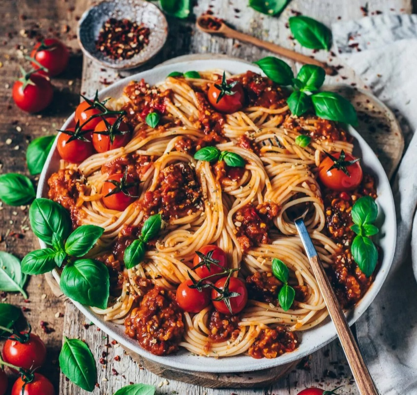

Vegane Bolognese
Leicht, schnell und lecker

Zubereitungszeit: 45 Minuten
Kcal / Portion: 42
Zutaten:
- 200 g festen Tofu
- 1 Zwiebel
- 2 Knoblauchzehen
- 100g Möhren
- 100g Sellerie
- 2EL Olivenöl
- 500g gehackte Tomaten
- 1,5 Liter Wasser
- Gemüsebrühe
- Schuss Rotwein
- Italienische Kräuter
- Lorbeerblätter
- 200g Vegane Sahne
Zubereitung
- Zwiebel, Knoblauch, Möhren und Sellerie schälen und in feine Würfel schneiden.
- Den Tofu auspressen (das klappt am besten mit einem Küchenkrepp) und anschließend zerbröseln
- Das Olivenöl in einer beschichteten Pfanne oder in einem mittelgroßen, beschichteten Topf erhitzen und den Tofu scharf anbraten, bis er schön gold-braun ist.
- Danach die Zwiebeln, Möhren und Sellerie hinzugeben und braten, bis die Zwiebeln glasig sind.
- Dann noch den Knoblauch kurz (ca. 30 Sekunden) mit anbraten.
- Jetzt das Tomatenmark und die Tomaten hinzugeben und alles verrühren.
- Die Gemüsebrühe eingießen und die Sauce mit Salz, Pfeffer, italienischen Kräutern und Zucker abschmecken. Bei mittlerer Hitze knapp 15-20 Minuten köcheln lassen, bis die Soße schön eingedickt ist.
- In der Zwischenzeit die Spaghetti in Salzwasser bissfest kochen und anschließend abgießen.
- Die Spaghetti mit der Soße servieren und nach Belieben mit Hefeflocken und frischem Basilikum garnieren.